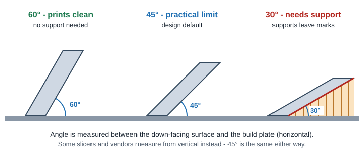
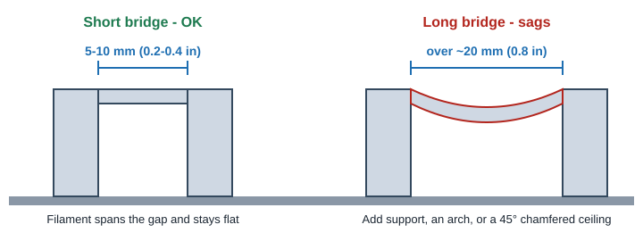
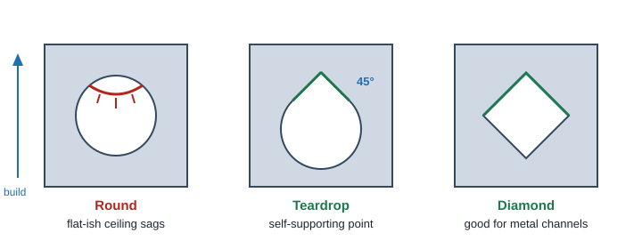
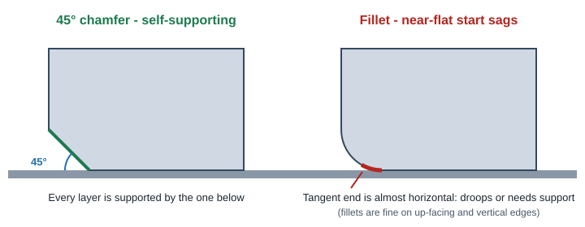

3D Printing
Overhangs & Supports
Supports cost material, time and cleanup, and they leave marks. Designing surfaces to be self-supporting is the single biggest quality and cost lever for FDM, SLA and DMLS.
The 45° overhang rule

Each layer can only extend a little past the one below it. At 45° the step is about one layer height, which almost every process handles. Shallower than that, the edge droops, curls or needs support.
| Process | Self-supporting angle (from horizontal) | Supports | Design note |
|---|---|---|---|
| FDM | 45° design value; 30-35° possible with good cooling | Breakaway or soluble | Support scars on down-facing faces; soluble supports cost more |
| SLA | 30-45° depending on resin and size | Always some (touch points) | Orient so touch points land on non-cosmetic faces; watch unsupported "islands" |
| SLS / MJF | Any angle | None (powder bed) | Focus on warp of large flat areas and thick sections instead |
| DMLS | 45° minimum; 0.5 mm (0.020 in) unsupported overhang max (some sources allow up to 0.8 mm; design to 0.5 mm) | Required, welded to the part | Supports are removed by machining or wire EDM, so they add real cost |
Bridging

- FDM: 5-10 mm (0.2-0.4 in) bridges are reliable; up to ~20 mm with good cooling and tuning. Beyond that, add support, an arch, or a 45° pitched ceiling.
- SLA: a flat ceiling is an overhang, not a bridge, and needs supports. Pitch roofs of hollow sections.
- DMLS: do not rely on bridging. Flat ceilings need supports that are hard to remove inside cavities.
Horizontal holes and channels

- FDM: round holes up to about 10 mm (0.4 in) usually self-support; larger ones sag at the top. Use a teardrop and ream round if needed.
- Holes print slightly undersize in FDM and SLA. Drill or ream critical holes after printing.
- Metal: use teardrop or diamond profiles for channels larger than about 8 mm (0.30 in).
- Holes along the build axis (vertical) print the roundest. Orient critical holes vertically when you can.
Down-facing edges: chamfer, don't fillet

Do
- Use 45° chamfers on down-facing edges and under ledges.
- Pitch ceilings and roofs of cavities at 45° or steeper.
- Add gussets or 45° ramps under shelves and bosses.
- Orient the part so the fewest, least visible faces need support.
- Keep fillets for up-facing and vertical edges.
Don't
- Leave large flat ceilings inside closed cavities (supports cannot be removed).
- Put supports on sealing faces, bearing bores or cosmetic surfaces.
- Fillet bottom edges that sit on the build plate.
- Design thin, unsupported "islands" that start mid-air (SLA, DMLS).
Orientation choices
| Goal | Orientation tip |
|---|---|
| Fewest supports | Largest flat face on the plate; overhangs pointing up |
| Best cosmetic face | Cosmetic face up (FDM) or away from supports (SLA) |
| Roundest holes | Hole axis vertical (along Z) |
| Strength (FDM) | Keep main bending loads along the layers, not across them |
| Accuracy (SLA, DMLS) | Critical features in XY; Z tolerance is looser |
| Least warp (DMLS) | Tilt large flat areas 30-45° off the plate to reduce stress and support area |
Service bureaus choose orientation to fit their build. If one face must be smooth or one hole must be round, say so in the order notes or on the drawing.
ProtoLabs: 7 Mistakes to Avoid When Designing 3D Printed Parts (DMLS overhang limits). SOLIDWORKS: Introduction to Designing for Metal 3D Printing. ETMM: 5 tips for additive manufacturing designs (45° self-supporting angle). FDM bridging and hole values are general FDM practice and vary by printer.